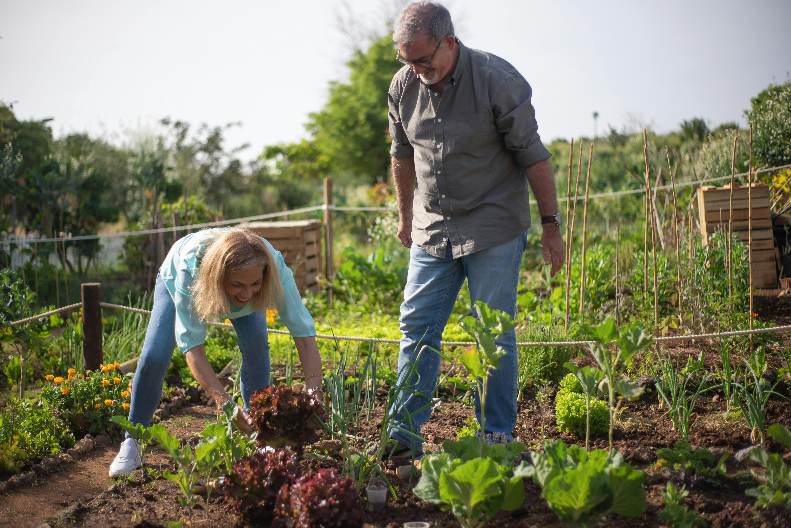

A Agricultura Familiar é um modelo de produção que envolve pequenas propriedades rurais, geralmente familiares, que buscam um manejo sustentável da terra, com foco na produção de alimentos saudáveis e na preservação do meio ambiente.
Benefícios da Agricultura Familiar

Produção sustentável e local
Valorização dos pequenos produtores
Geração de emprego e renda nas áreas rurais
Preservação ambiental e uso responsável dos recursos naturais